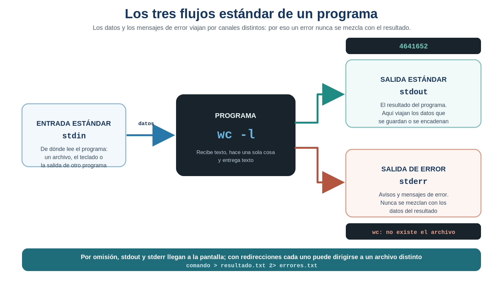
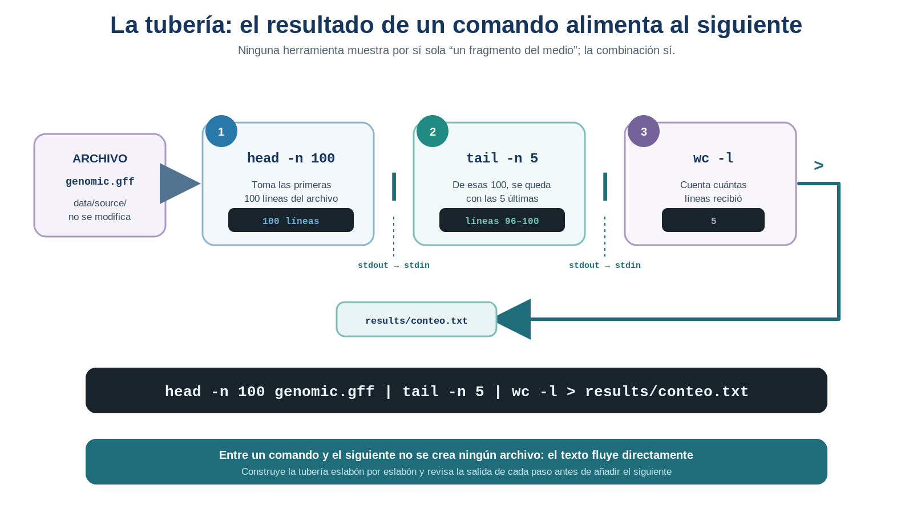

S10 — Reconocer: anatomía de un archivo biológico y flujos de datos
Antes de clase leerás las secciones marcadas como indispensables y harás un primer intento: sin ejecutar nada todavía, predecir con cifras cómo está organizado por dentro cada archivo, cómo medirías el tamaño del genoma y —esto es lo importante— en qué dirección y magnitud se equivocará tu medición. Durante el taller contrastarás cada predicción con la evidencia, aprenderás a encadenar operaciones y a guardar resultados, y comprobarás por qué tus primeras mediciones son incorrectas. Después redactarás la Tarea 6. El primer intento es formativo: importa que muestre tu razonamiento, aunque contenga errores corregibles — de hecho, esta sesión está diseñada para que los contenga.
Ficha del módulo
| Elemento | Descripción |
|---|---|
| Sesión | S10, 2 horas |
| Unidad | U4. Procesamiento y exploración de datos genómicos |
| Competencia principal | D. Análisis y exploración de datos genómicos |
| Competencias integradas | A. Documentación reproducible; B. Entorno Unix |
| Propósito | Pasar de describir archivos biológicos a interrogarlos: reconocer su estructura interna y construir flujos de trabajo que encadenen operaciones y capturen resultados de forma reproducible |
| Consulta previa del Plan | Material clásico L5-tuberías; este módulo lo sustituye como lectura autocontenida |
| Lectura indispensable | Secciones 1–7 de este módulo (~40 min) + Buffalo (2015), Cap. 7, apartados iniciales sobre flujos y redirecciones (~30 min) |
| Lectura de consulta | Cajas de Sintaxis mínima con opciones adicionales; ProfeUnix Bioinfo; manuales oficiales en Referencias |
| Primer intento | Práctica 1: predicción cuantitativa y anticipación del sesgo, 25–30 min, sin ejecutar comandos |
| Evidencia | Primeras mediciones documentadas con su advertencia de imprecisión + inicio de la sección de U4 en doc/protocolo.md |
| Tarea numerada | Tarea 6 — Reporte de lectura (Buffalo, Cap. 7) + 1.er avance del proyecto |
Relación con lo que ya sabes
U3 (S7–S9) U4 (S10 →)
Obtener, documentar y verificar → Interrogar
"este archivo es el que digo" "¿qué me dice este archivo sobre el genoma?"En S9 cerraste la Unidad 3 con una frase que vale la pena recordar: ahora sé demostrar que otra persona puede obtener exactamente el mismo archivo y verificar que es idéntico. Tus archivos están en data/source/, con su procedencia, su versión y su checksum documentados.
Esta sesión hace la pregunta siguiente: ¿y qué dicen esos archivos?
Buena parte de las herramientas que usarás hoy ya las conoces. Lo que cambia es la intención:
| Habilidad que ya tienes | Dónde la aprendiste | Qué cambia en S10 |
|---|---|---|
Ver el contenido de un archivo (head, tail, less, cat) |
S5, S9 | Ya no miras para confirmar que el archivo llegó bien, sino para reconocer su estructura interna |
Identificar el tipo de archivo (file) |
S5, S9 | Lo aplicas a decidir si puedes procesarlo directamente o hay que descomprimirlo |
Editar archivos (nano, vi) |
S4 | Aprendes cuándo NO editar: los originales no se tocan |
| Interpretar FASTA y GFF3 | S7 | Pasas de “sé qué representa” a “sé cómo está escrito, línea por línea” |
| Navegar y usar rutas | S4 | Diriges salidas a results/ con rutas relativas |
Lo genuinamente nuevo de hoy son tres ideas, no tres comandos:
- Un archivo de texto tiene una anatomía: unidades, separadores, marcas y ausencias.
- Los programas se comunican mediante flujos: lo que sale de uno puede entrar en otro.
- Un resultado que no se captura no existe: se pierde en cuanto cierras la terminal.
En esta sesión no descargas datos nuevos ni vuelves a verificar nada. Trabajas con los archivos que ya tienes en data/source/ y no los modificas. Todo lo que produzcas hoy se escribe en results/.
Dónde estás en la investigación
La Unidad 4 es una sola investigación sobre tu genoma. Estas son sus preguntas y el punto en el que las tomas hoy:
| Pregunta de la investigación | En S10 |
|---|---|
| ¿Cómo está organizado por dentro un archivo biológico? | ✔ Se resuelve aquí |
| ¿De qué tamaño es el genoma? | ✔ Se abre aquí (respuesta preliminar) |
| ¿Cuántos cromosomas o replicones tiene? | ✔ Se abre aquí (indicio, sin confirmar) |
| ¿Qué tipos de features contiene la anotación? | ☐ S11–S13 |
| ¿Cuántos genes existen? | ☐ S12, refinada en S18 y S22 |
| ¿Cuántas CDS existen? | ☐ S12, refinada en S18 y S22 |
| ¿Cuántos genes existen por cadena? | ☐ S18 y S22 |
| ¿Cómo organizar la información para responder nuevas preguntas? | ☐ S20–S23 |
Las preguntas marcadas con ✔ son las únicas que te ocupan hoy, y dos de las tres quedarán con una respuesta provisional: eso es lo esperado. Las marcadas con ☐ requieren herramientas que todavía no tienes. Cuando termines la sesión, vuelve a esta tabla: sabrás exactamente qué casilla avanzaste y cuál sigue.
Resultados de aprendizaje
Al finalizar la sesión podrás:
- Describir la anatomía de un archivo FASTA y de un archivo GFF3: línea, registro, delimitador, encabezado, comentario y valor faltante.
- Distinguir las líneas que contienen datos de las que contienen metadatos o comentarios.
- Explicar qué son la entrada estándar, la salida estándar y la salida de error, e identificar el número que corresponde a cada una.
- Redirigir la salida de un comando a un archivo y encadenar comandos mediante pipes, distinguiendo el flujo en tránsito del archivo en disco.
- Medir un archivo con
wcy justificar por qué el número obtenido no responde todavía la pregunta biológica. - Interpretar biológicamente una medición preliminar y documentar su limitación.
- Iniciar la sección de la Unidad 4 en
doc/protocolo.mdcon el formato de cuaderno de laboratorio.
Lista de verificación previa
Antes de comenzar confirma:
Ruta de S10
| Momento | Actividad | Producto | Tiempo estimado |
|---|---|---|---|
| Antes de clase | Leer secciones 1–7 y el Cap. 7 de Buffalo (apartados iniciales) | Notas y dudas | 60–70 min |
| Antes de clase | Práctica 1: predicciones cuantificadas, sin ejecutar | Predicciones y sesgo anticipado | 25–30 min |
| Taller | Retomar U3 y comparar los primeros intentos | Punto de partida compartido | 10 min |
| Taller | Práctica 2: reconocer la anatomía real de tus archivos | Anatomía corregida | 25 min |
| Taller | Práctica 3: primeras mediciones y su crítica | Tres números y tres advertencias | 25 min |
| Taller | Práctica 4: capturar resultados con redirecciones | Archivos en results/ |
25 min |
| Taller | Práctica 5: encadenar operaciones con pipes | Primer flujo documentado | 25 min |
| Taller | Cierre e interpretación | Bloque inicial del protocolo | 10 min |
| Después | Tarea 6: reporte de lectura + 1.er avance del proyecto | Entrega calificada | 60–90 min |
1. De un dato verificado a un dato interrogado [Indispensable]
Durante tres unidades has tratado tus archivos con cuidado casi ceremonial: no los edites, no los muevas sin verificar, conserva su nombre original. Ese cuidado sigue vigente. Pero un dato que solo se conserva no sirve de nada: hay que preguntarle cosas.
El curso mantiene siempre el mismo orden de razonamiento (U1):
pregunta → evidencia → datos → operación → herramientaNunca al revés. Es tentador empezar por “quiero aprender grep”, pero eso lleva a buscar problemas para las soluciones que uno conoce. Aquí la secuencia es: quiero saber de qué tamaño es este genoma → la evidencia está en la secuencia del FASTA → necesito contar sus bases → contar es una operación de medición → wc mide.
En esta sesión recorrerás ese camino por primera vez con datos propios. Y descubrirás algo que será la lección más importante de toda la unidad:
Un comando puede ejecutarse sin error, devolver un número perfectamente válido y no responder tu pregunta. En la Unidad 3 un resultado era correcto o incorrecto: el checksum coincidía o no. Aquí un resultado puede ser correcto y aun así ser mala evidencia. Detectarlo, explicarlo y corregirlo es lo que aprenderás durante las diez sesiones de esta unidad.
2. Anatomía de un archivo de texto biológico [Indispensable]
Tus archivos son texto plano: una secuencia de caracteres organizada en líneas. Nada más. No hay formato oculto, ni tipografías, ni celdas. Esa simplicidad es lo que permite que decenas de programas distintos —escritos en épocas y lenguajes distintos— puedan leerlos (Buffalo, 2015, cap. 7).
En S7 interpretaste FASTA, GFF3 y GenBank desde la pregunta ¿qué objeto biológico representa cada formato?. Aquí los revisas desde una pregunta distinta: ¿cómo está escrito este archivo, carácter por carácter, y qué consecuencias tiene eso para procesarlo? Un mismo formato admite las dos lecturas: la del biólogo que sabe qué significa una anotación y la de quien tiene que contarlas sin equivocarse. Esta sección es un repaso deliberadamente operativo; si S7 te quedó claro, te llevará pocos minutos, pero no la saltes: los detalles que aquí parecen triviales —dónde termina un comentario, dónde se corta una línea— son exactamente los que producen conteos equivocados.
Todo archivo de texto biológico se entiende con cinco preguntas:
| Pregunta | Qué busca | En FASTA | En GFF3 |
|---|---|---|---|
| ¿Cuál es la unidad? | Qué representa una línea | Un encabezado o un fragmento de secuencia | Un registro de anotación (un feature) |
| ¿Cuál es el delimitador? | Qué separa los campos dentro de una línea | No aplica en la secuencia; el encabezado usa espacios | Tabulador entre las 9 columnas |
| ¿Hay encabezado? | Una línea inicial que nombre las columnas | No | No: las columnas no están nombradas en el archivo |
| ¿Hay comentarios o metadatos? | Líneas que no son datos | Las líneas que empiezan con > describen la secuencia siguiente |
Las líneas que empiezan con # (y ## para directivas) |
| ¿Cómo se marca lo faltante? | Qué se escribe cuando no hay valor | — | Un punto (.) |
2.1 Anatomía de un FASTA
>NC_000913.3 Escherichia coli str. K-12 substr. MG1655, complete genome
AGCTTTTCATTCTGACTGCAACGGGCAATATGTCTCTGTGTGGATTAAAAAAAGAGTGTCTGATAGCAGC
TTCTGAACTGGTTACCTGCCGTGAGTAAATTAAAATTTTATTGACTTAGGTCACTAAATACTTTAACCAA
...- Una línea que empieza con
>es un encabezado: nombra e identifica la secuencia que viene después. Todo lo que sigue hasta el próximo>es esa secuencia. - Las líneas de secuencia están cortadas artificialmente, casi siempre cada 60, 70 u 80 caracteres. Ese corte es una convención de presentación: no significa nada biológico. La secuencia real es continua.
Ese detalle —que los saltos de línea son artificiales— es la causa de un error de conteo muy frecuente, y lo cometerás hoy a propósito en la Práctica 3.
2.2 Anatomía de un GFF3
##gff-version 3
##sequence-region NC_000913.3 1 4641652
#!genome-build-accession NCBI_Assembly:GCF_000005845.2
NC_000913.3 RefSeq region 1 4641652 . + . ID=NC_000913.3:1..4641652;Dbxref=taxon:511145
NC_000913.3 RefSeq gene 190 255 . + . ID=gene-b0001;Name=thrL;locus_tag=b0001
NC_000913.3 RefSeq CDS 190 255 . + 0 ID=cds-YP_025292.1;Parent=gene-b0001;product=thr operon leader peptideCada línea de datos es un registro con nueve columnas separadas por tabulador (Sequence Ontology, 2020):
| # | Columna | Qué contiene | Ejemplo |
|---|---|---|---|
| 1 | seqid |
Identificador de la secuencia (replicón) | NC_000913.3 |
| 2 | source |
Quién o qué generó la anotación | RefSeq |
| 3 | type |
Tipo de feature | gene, CDS, tRNA |
| 4 | start |
Coordenada de inicio | 190 |
| 5 | end |
Coordenada final | 255 |
| 6 | score |
Puntaje del método, si existe | . |
| 7 | strand |
Cadena | +, - o . |
| 8 | phase |
Marco de lectura (solo CDS) | 0, 1, 2 o . |
| 9 | attributes |
Pares clave=valor separados por ; |
ID=gene-b0001;Name=thrL |
Tres cosas que conviene fijar desde ahora:
- Las columnas no están nombradas en el archivo. No hay línea de encabezado: el orden de las columnas es su significado. Si te equivocas de número de columna, obtendrás datos válidos que responden otra pregunta.
- El punto significa “no aplica” o “no disponible”, no cero. Un
.enscoreno es un puntaje de 0. - Las líneas que empiezan con
#no son datos. Son directivas y comentarios.##sequence-regiones especialmente útil: declara el nombre y la longitud de cada replicón. La usarás en S13 para validar tus propios conteos.
El punto como marca de valor faltante no es universal. Otras tablas biológicas usan NA, NULL, -, ? o simplemente dejan la celda vacía. Por eso, cuando en S20 generes tus propias tablas, tendrás que decidir y documentar cómo representas lo que falta. Un archivo cuyo criterio de faltantes no está documentado es un archivo que alguien va a malinterpretar.
Sintaxis mínima — head
head -n 20 data/source/genomic.gff¿Qué hace? Muestra las primeras líneas de un archivo sin modificarlo.
¿Por qué aparece aquí? Es la forma más rápida de ver la zona de comentarios y directivas, que en un GFF3 siempre está al inicio.
🤖 Prompt para ProfeUnix Bioinfo: > Muéstrame ejemplos de head aplicados a archivos FASTA y GFF3. > ¿Cómo veo un fragmento del medio de un archivo, no del principio?
Sintaxis mínima — cat
cat data/source/md5checksums.txt¿Qué hace? Envía el contenido completo del archivo a la salida estándar.
¿Por qué aparece aquí? Porque muestra la idea central de la sesión: un comando produce un flujo que puede ir a la pantalla, a un archivo o a otro comando.
No uses cat sobre un genoma completo: son millones de caracteres que inundarán la terminal. Para archivos grandes, head, tail o less (S5).
Sintaxis mínima — nano
nano doc/protocolo.md¿Qué hace? Abre un editor de texto dentro de la terminal.
¿Por qué aparece aquí? Porque hoy sí editarás un archivo de texto —tu protocolo— y no editarás otros: los de data/source/. Saber cuál es cuál es parte de la competencia.
Nunca abras un archivo de data/source/ en un editor “solo para ver”. Un guardado accidental cambia el archivo y rompe el checksum que tanto trabajo costó verificar en S9. Para ver, usa less; sal con q.
Práctica 1 — Predecir y acotar antes de medir (antes de clase, primer intento)
Objetivo. Formular una predicción cuantitativa razonada sobre tus archivos y anticipar el error de tu propia estrategia, antes de tener evidencia. Es exactamente lo que hace quien diseña un experimento: no se mide para descubrir qué sale, se mide para contrastar lo que se esperaba.
Antes de clase (primer intento). Sin ejecutar ningún comando, en doc/s10-primer-intento.md:
Predicción con orden de magnitud. A partir de lo que sabes del organismo con el que trabajas (U3), estima el tamaño de su genoma en pares de bases y el número de genes que esperarías. Anota la fuente de esa expectativa —una lectura, la página del ensamblado, conocimiento previo— y un intervalo, no un número exacto: “entre X y Y”.
Derivación del tamaño del archivo. Si el genoma tiene aproximadamente ese tamaño y el archivo FASTA es texto plano donde cada base ocupa un carácter:
- ¿cuántos bytes esperarías que ocupe el archivo?
- si las líneas de secuencia se cortan cada 60–80 caracteres, ¿cuántos saltos de línea habría, y qué porcentaje del archivo representarían?
- ¿ese porcentaje es despreciable o no? Justifica el criterio con el que decides.
Estrategia y su sesgo. Con las herramientas que ya dominas (S5, S9), propón cómo medirías el tamaño del genoma. Después responde: tu medición, ¿sobreestimará o subestimará el valor real? ¿En qué proporción, según tu cálculo del punto 2? Predecir la dirección y la magnitud del error es más valioso que acertar el número.
Falsabilidad. Escribe una condición concreta que, si se cumple al abrir el archivo, demuestre que tu razonamiento del punto 2 era incorrecto. Por ejemplo: “si las líneas no están cortadas y cada secuencia ocupa una sola línea, mi estimación de saltos de línea no aplica”.
Estructura esperada del GFF3. Sin abrirlo, predice: ¿cuántas columnas tiene un registro?, ¿qué proporción de las líneas del archivo crees que serán comentarios frente a datos?, ¿y qué relación numérica esperas entre registros de tipo
geney de tipoCDSen un procariota? Justifica esta última con biología, no con informática.
Durante el taller. Contrastarás cada predicción con la evidencia y anotarás, para cada una: confirmada, refutada o indeterminada con esta evidencia. Las refutadas son las interesantes: para cada una, explica si falló el supuesto biológico o el informático.
Después del taller. Las conclusiones se integran al protocolo (Sección 7); este documento no se entrega por separado.
Criterio de logro: presentas predicciones cuantificadas con su justificación y anticipas el sesgo de tu propia estrategia. No se evalúa el acierto: se evalúa que el razonamiento sea explícito y contrastable. Una predicción refutada y bien argumentada vale más que un número correcto sin fundamento.
El punto 3 es el que hace distinta a esta unidad. En bioinformática, saber que un método sesga sistemáticamente hacia arriba —y cuánto— suele ser más útil que un único número presentado sin intervalo ni supuestos.
Práctica 2 — La anatomía real de tus archivos (durante el taller)
Objetivo. Reconocer, sobre tus propios archivos, cada elemento de la Sección 2.
Pasos.
Confirma dónde estás y qué tienes:
pwd ls -lh data/source/Identifica el tipo de cada archivo, por si alguno sigue comprimido:
file data/source/*Si alguno es
gzip compressed data, descomprime una copia endata/processed/(S5). El original dedata/source/no se toca.Mira el inicio y el final de tu FASTA:
head -n 3 data/source/<tu_archivo>.fna tail -n 3 data/source/<tu_archivo>.fnaAnota: ¿la primera línea empieza con
>?, ¿de cuántos caracteres son las líneas de secuencia?, ¿la última línea está completa o cortada?Mira el inicio de tu GFF3 y localiza la frontera entre comentarios y datos:
head -n 15 data/source/<tu_archivo>.gffAnota: ¿cuántas líneas empiezan con
#?, ¿qué declara##sequence-region?, ¿cuál es la primera línea de datos?Recorre el archivo con calma y sal sin modificarlo:
less data/source/<tu_archivo>.gffDentro de
less,qsale,/busca yGva al final.
Ver retroalimentación
Lo que sigue es estructura de formato: vale para cualquier FASTA o GFF3, venga de donde venga. Las cifras concretas —cuántas líneas de comentario, qué longitud— sí dependen de tu archivo.
En el FASTA. La primera línea empieza por > siempre: es el encabezado, y todo lo que va después del > hasta el primer espacio es el identificador de la secuencia. Las líneas de secuencia suelen tener una anchura fija —60, 70 u 80 caracteres, según quién generó el archivo— salvo la última de cada secuencia, que es la que sobra. Si tu tail muestra una línea más corta, no está cortada: está completa.
En el GFF3. La primera línea es ##gff-version 3; es obligatoria y sirve para reconocer el formato. Las líneas que empiezan por ## son directivas —instrucciones para el programa que lee el archivo—, y ##sequence-region declara, para cada molécula, su identificador y su longitud en pares de bases. Ojo con esa línea: es una declaración, no una medición, y en S12 volverás sobre ella para medir el genoma.
Las líneas que empiezan con un solo # son comentarios libres. La primera línea de datos es la primera que no empieza por #, y tiene nueve columnas separadas por tabuladores.
Que un archivo esté comprimido no cambia nada de lo anterior; solo obliga a descomprimir una copia antes de mirarlo. file te lo dijo en el paso 2, y el original de data/source/ no se toca.
Producto. En tu primer intento, marca cada predicción como confirmada, refutada o indeterminada con esta evidencia, y explica en una frase, para cada refutación, si falló el supuesto biológico o el informático.
Criterio de logro: puedes señalar, en tus propios archivos, la unidad, el delimitador, la ausencia de encabezado, las líneas de comentario y al menos un valor faltante.
3. Medir: contar líneas, palabras y caracteres [Indispensable]
Una vez reconocida la estructura, la primera pregunta cuantitativa es siempre la más simple: ¿cuánto hay?
Sintaxis mínima — wc
wc -l data/source/genomic.gff¿Qué hace? Cuenta líneas (-l), palabras (-w) o caracteres (-c) de un archivo.
¿Por qué aparece aquí? Porque es la primera herramienta que convierte un archivo en un número, y por tanto la primera que puede darte un número equivocado.
🤖 Prompt para ProfeUnix Bioinfo: > Explícame las opciones -l, -w y -c de wc con ejemplos. > Si aplico wc -c a un archivo FASTA, ¿qué estoy contando exactamente?
Ahora viene lo interesante. Aplica wc a tus archivos y observa qué preguntas crees estar respondiendo y cuáles realmente respondes:
| Comando | Parece responder | En realidad responde |
|---|---|---|
wc -c genome.fna |
¿De qué tamaño es el genoma? | Cuántos bytes ocupa el archivo: bases + encabezados + saltos de línea |
wc -l genome.fna |
¿Cuántas secuencias hay? | Cuántas líneas hay: una por encabezado y muchas por cada secuencia |
wc -l genomic.gff |
¿Cuántas anotaciones hay? | Cuántas líneas hay: registros + comentarios + directivas |
Ninguno de los tres responde la pregunta biológica. Los tres son correctos como mediciones de archivo. La diferencia entre “medir el archivo” y “medir el genoma” es el núcleo de esta sesión.
No pasa nada por obtener un número imperfecto: pasa algo grave por anotarlo como si fuera exacto. Un resultado documentado con su limitación es evidencia útil; el mismo resultado presentado como definitivo es un error que se propagará al resto del análisis.
Práctica 3 — Primeras mediciones y su crítica (durante el taller)
Objetivo. Obtener tres números y explicar, para cada uno, por qué todavía no responde la pregunta.
Pasos.
Mide tu FASTA en bytes y en líneas:
wc -c data/source/<tu_archivo>.fna wc -l data/source/<tu_archivo>.fnaMide tu GFF3 en líneas:
wc -l data/source/<tu_archivo>.gffEstima cuánto sobra en cada medición. Por ejemplo: si tus líneas de secuencia son de 70 caracteres, ¿qué proporción del conteo de bytes corresponde a saltos de línea? ¿Cuántas líneas de comentario contaste como si fueran anotaciones (Práctica 2, paso 4)?
Escribe, para cada número, una frase con esta forma:
Obtuve <número> al medir <qué>. Esto NO es <la cantidad biológica>, porque además incluye <qué sobra>. Para corregirlo necesitaría <qué me falta poder hacer>.
Producto. Tres mediciones con su advertencia explícita.
Criterio de logro: puedes explicar la fuente de error de cada medición y qué operación te falta para eliminarla. El número exacto no es el criterio: la explicación sí.
Guarda estos números. En S12 los vas a corregir y la comparación entre ambos —el de hoy y el corregido— será una de las entradas más valiosas de tu protocolo.
4. Los tres flujos: entrada, salida y error [Indispensable]
Hasta ahora, cada comando escribía su resultado en la pantalla y ahí terminaba. Para construir un análisis necesitas entender de dónde toma su información un programa y a dónde la envía.
Todo programa de Unix trabaja con tres canales o flujos (Buffalo, 2015, cap. 7):

Figura 1. Los tres flujos estándar de un programa. El resultado y los mensajes de error viajan por canales separados, de modo que un error nunca queda incrustado dentro de los datos. Elaboración propia.
- Entrada estándar (
stdin): de dónde lee el programa si no le das un archivo. - Salida estándar (
stdout): dónde escribe su resultado normal. - Salida de error (
stderr): dónde escribe sus mensajes de error y advertencias.
Cada uno de esos canales tiene además un número asignado, el mismo en cualquier sistema Unix:
| Número | Nombre | Abreviatura | Para qué sirve |
|---|---|---|---|
| 0 | Entrada estándar | stdin |
Por donde entran los datos al programa |
| 1 | Salida estándar | stdout |
Por donde sale el resultado |
| 2 | Salida de error | stderr |
Por donde salen los errores y advertencias |
Ese número no es un detalle decorativo: es lo que te permitirá nombrar cada canal cuando quieras redirigirlo. El 2 de 2> —que verás en la Sección 5— es precisamente el número de la salida de error. Y > a secas es en realidad una abreviatura de 1>: si no dices qué canal quieres redirigir, el sistema asume el 1, la salida estándar.
Esos números se llaman descriptores de archivo (file descriptors), y son la forma en que el sistema operativo identifica cualquier canal abierto por un programa. Los tres primeros —0, 1 y 2— están reservados y se abren automáticamente al arrancar cualquier proceso; los archivos que el programa abra después reciben el 3, el 4, y así sucesivamente.
Que la salida y el error viajen por canales separados parece un detalle técnico, pero tiene una consecuencia práctica muy concreta: puedes guardar el resultado de un análisis en un archivo y seguir viendo los errores en pantalla. Si ambos fueran el mismo canal, un mensaje de error quedaría mezclado dentro de tus datos —y en un archivo de miles de líneas, no lo notarías.
Esta separación es una decisión de diseño de los años setenta que sigue vigente porque resuelve exactamente este problema: los datos van por un canal, las quejas del programa por otro. Es también la razón por la que un programa bien hecho nunca imprime mensajes informativos en stdout: contaminaría el resultado de quien lo use dentro de un flujo (Buffalo, 2015, cap. 7).
5. Capturar el resultado: redirecciones [Indispensable]
Un resultado que solo aparece en pantalla se pierde. Y en un curso donde todo debe ser reproducible, perder resultados no es una opción: la redirección los guarda.
Sintaxis mínima — > (redirigir la salida)
wc -l data/source/genomic.gff > results/conteo-lineas-gff.txt¿Qué hace? Envía la salida estándar a un archivo en vez de a la pantalla. Si el archivo existe, lo sobrescribe.
¿Por qué aparece aquí? Porque es lo que convierte una consulta efímera en evidencia guardada.
Sintaxis mínima — >> (añadir al final)
wc -l data/source/<otro_archivo>.gff >> results/conteo-lineas-gff.txt¿Qué hace? Igual que >, pero añade al final en lugar de sobrescribir.
Sintaxis mínima — 2> (redirigir los errores)
wc -l data/source/archivo-que-no-existe.gff 2> results/errores.txt¿Qué hace? Envía la salida de error a un archivo, dejando la salida normal en pantalla.
¿Por qué se escribe con un 2? Porque 2 es el número de la salida de error (Sección 4). Por la misma razón, > equivale a 1>: si no indicas el canal, se asume el 1, la salida estándar.
🤖 Prompt para ProfeUnix Bioinfo: > Explícame la diferencia entre >, >>, 2> y &> con ejemplos. > ¿Qué pasa si redirijo a un archivo que ya existe?
> borra sin preguntar. Si escribes wc -l data/source/genomic.gff > data/source/genomic.gff, destruyes el archivo original. Nunca redirijas hacia data/source/. Todas tus salidas van a results/ o a data/processed/. Esta es la forma más común de perder datos en Unix, y le ocurre a todo el mundo al menos una vez: que no sea con tus originales.
Práctica 4 — Capturar resultados de forma reproducible (durante el taller)
Objetivo. Convertir las mediciones de la Práctica 3 en archivos de resultados con nombres interpretables.
Pasos.
Crea el directorio de resultados de la sesión, si hace falta:
mkdir -p results/s10Guarda cada medición en su propio archivo, con un nombre que diga qué contiene:
wc -c data/source/<tu_archivo>.fna > results/s10/fasta-bytes.txt wc -l data/source/<tu_archivo>.fna >> results/s10/fasta-bytes.txt wc -l data/source/<tu_archivo>.gff > results/s10/gff-lineas.txtComprueba que se guardó lo que esperabas:
cat results/s10/fasta-bytes.txt cat results/s10/gff-lineas.txtProvoca un error a propósito y sepáralo del resultado:
wc -l data/source/no-existe.gff 2> results/s10/errores.txt cat results/s10/errores.txtVerifica que nada de esto tocó tus originales:
ls -lh data/source/
Producto. Tres archivos en results/s10/ y la confirmación de que data/source/ sigue igual.
Criterio de logro: tus resultados están guardados con nombres que otra persona entendería sin preguntarte, y puedes explicar la diferencia entre >, >> y 2>.
Un buen nombre dice qué contiene, no cómo se produjo: gff-lineas.txt es útil; salida1.txt o prueba_final_v2_bueno.txt no lo son. Adopta hoy tu convención y consérvala durante toda la unidad.
6. Encadenar operaciones: tuberías [Indispensable]
Aquí aparece la idea que sostiene el resto de la unidad. Si un programa escribe en la salida estándar y otro puede leer de la entrada estándar, entonces la salida de uno puede ser la entrada del siguiente, sin pasar por un archivo intermedio.
Eso es una tubería o pipe, y se escribe con la barra vertical |.
Sintaxis mínima — | (tubería)
head -n 100 data/source/genomic.gff | tail -n 5¿Qué hace? Toma las primeras 100 líneas del archivo y, de ellas, muestra las 5 últimas: es decir, las líneas 96 a 100.
¿Por qué aparece aquí? Porque ninguna herramienta por sí sola muestra “un fragmento del medio”. La combinación sí. Ese es el principio de todo el análisis que harás en esta unidad: herramientas pequeñas que hacen una cosa, combinadas para responder preguntas que ninguna resuelve sola (Buffalo, 2015, cap. 7).
🤖 Prompt para ProfeUnix Bioinfo: > Explícame qué hace el operador | en Unix, con ejemplos usando head y tail. > ¿Cuál es la diferencia entre comando > archivo y comando | otro_comando?

Figura 2. Una tubería conecta la salida estándar de un comando con la entrada estándar del siguiente. El resultado final puede redirigirse a un archivo; entre los eslabones no se crea ningún archivo intermedio. Elaboración propia.
Compara las dos formas de trabajar:
# Sin tubería: se crea un archivo intermedio que nadie volverá a usar
head -n 100 data/source/genomic.gff > results/s10/temporal.txt
tail -n 5 results/s10/temporal.txt
# Con tubería: el resultado fluye directamente de un comando al siguiente
head -n 100 data/source/genomic.gff | tail -n 5Ambas dan el mismo resultado. La segunda no deja basura, se lee de corrido y expresa mejor la intención. Y una tubería puede tener tantos eslabones como necesites:
head -n 100 data/source/genomic.gff | tail -n 5 | wc -lUna tubería siempre puede terminar en una redirección. comando | comando > archivo encadena las operaciones y guarda el resultado final. Es la forma que tendrán casi todos los análisis del resto de la unidad.
No escribas cinco eslabones de golpe. Escribe el primero, mira su salida con head, añade el segundo, vuelve a mirar. Es la aplicación directa del principio de verificación: comprobar en pequeño antes de aplicar al archivo completo.
6.1 Lo que fluye no es el archivo [Indispensable]
Aquí conviene detenerse, porque este es el punto donde casi todo el mundo se equivoca la primera vez.
En una tubería, el archivo se lee una sola vez: en el primer eslabón. A partir de ahí ya no circula un archivo, sino un flujo de texto que cada comando recibe, transforma y entrega modificado al siguiente. El archivo original se queda quieto en data/source/, intacto y fuera de la tubería.
genomic.gff ──▶ head -n 100 ──▶ [100 líneas] ──▶ tail -n 5 ──▶ [5 líneas] ──▶ wc -l ──▶ 5
archivo ya NO es el archivo: ya NO son 100 líneas:
(9 662 líneas) es un flujo de 100 es un flujo de 5Fíjate en que el contenido va menguando a lo largo de la tubería: tail no ve las 9 662 líneas del archivo, ve las 100 que le entregó head. Y wc no ve ni el archivo ni las 100 líneas: ve las 5 que le pasó tail. Cada comando solo conoce lo que le llega por su entrada estándar.
De ahí se sigue una regla sencilla y muy útil:
En una tubería, solo el primer comando nombra el archivo. Los demás no llevan nombre de archivo: reciben sus datos por la entrada estándar. Si escribes el nombre del archivo en un comando posterior, ese comando ignora todo lo que la tubería le estaba entregando y vuelve a leer el archivo completo desde el principio.
Compara las dos líneas siguientes. La primera es correcta; la segunda es el error, y es silencioso:
# CORRECTO: el archivo se nombra una sola vez, al principio
head -n 100 data/source/genomic.gff | tail -n 5 | wc -l
# → 5
# ERROR SILENCIOSO: tail vuelve a abrir el archivo completo e ignora lo que head le mandó
head -n 100 data/source/genomic.gff | tail -n 5 data/source/genomic.gff | wc -l
# → 5 ... ¡el mismo número!, pero son las 5 ÚLTIMAS líneas del archivo,
# no las líneas 96 a 100Los dos comandos devuelven 5 y ninguno produce un mensaje de error. Pero responden preguntas distintas, y solo uno responde la tuya. Esta es, de nuevo, la lección de la Sección 1: un resultado puede ser correcto como número y equivocado como evidencia.
Cuando dudes de una tubería, haz esta prueba: quita el último eslabón y mira la salida real. Si en lugar del fragmento que esperabas aparece el principio o el final del archivo completo, es que algún comando volvió a leer el archivo. También ayuda contar: si el resultado no cambia al modificar el primer eslabón —por ejemplo, al pasar de head -n 100 a head -n 20—, entonces el primer eslabón no está influyendo en nada y la tubería está rota.
Hay una variante del mismo error, igual de frecuente, que consiste en volver al archivo de partida a mitad del análisis:
# Se filtró algo en el primer paso y luego se vuelve al archivo original:
# el trabajo del primer eslabón se pierde por completo
head -n 100 data/source/genomic.gff | wc -l data/source/genomic.gffLa pregunta que conviene hacerse antes de añadir cada eslabón es siempre la misma: ¿sobre qué estoy operando ahora: sobre el archivo o sobre lo que me acaba de entregar el comando anterior? En una tubería, salvo en el primer eslabón, la respuesta correcta es siempre la segunda.
Que un archivo pueda “menguar” a lo largo de la tubería no significa que se modifique. El archivo de data/source/ sigue intacto: lo que se reduce es la copia en tránsito que viaja por el flujo. Puedes comprobarlo en cualquier momento con wc -l sobre el archivo original: seguirá dando el mismo número.
Práctica 5 — Tu primer flujo de datos (durante el taller)
Objetivo. Construir y documentar un flujo de varios pasos, verificándolo paso a paso.
Pasos.
Localiza dónde terminan los comentarios de tu GFF3 y empiezan los datos. Empieza mirando:
head -n 15 data/source/<tu_archivo>.gffSupón que los comentarios ocupan las primeras N líneas. Extrae las 5 primeras líneas de datos, construyendo la tubería por partes:
head -n <N+5> data/source/<tu_archivo>.gff # primero mira head -n <N+5> data/source/<tu_archivo>.gff | tail -n 5 # ahora encadenaVerifica que el flujo hace lo que crees, contando lo que produce:
head -n <N+5> data/source/<tu_archivo>.gff | tail -n 5 | wc -lDebe devolver
5. Si devuelve otra cosa, algo no está haciendo lo que supones: revisa cada eslabón por separado.
Ver retroalimentación
Si no devuelve 5, hay tres causas posibles y se distinguen mirando dónde falla la tubería:
| Qué obtienes | Causa | Cómo confirmarlo |
|---|---|---|
| Menos de 5 | Tu N es mayor que el número real de líneas de comentario, o el archivo tiene menos líneas de las que pides |
Ejecuta solo el primer head y cuenta |
5, pero con líneas que empiezan por # |
Tu N es menor que el número real de comentarios: te llevaste directivas |
Mira la salida, no solo el conteo |
| Un error | Escribiste <N+5> literalmente en vez de sustituirlo por el número |
El mensaje nombrará el argumento |
El segundo caso es el importante: wc -l diría 5 igualmente. Contar confirma cuántas líneas salieron, no cuáles. Que el número cuadre no demuestra que el flujo haga lo que crees; por eso el paso 4 te pide mirar el archivo, no solo contarlo.
Guarda el resultado:
head -n <N+5> data/source/<tu_archivo>.gff | tail -n 5 > results/s10/primeras-anotaciones.txt cat results/s10/primeras-anotaciones.txtObserva el archivo resultante y responde: ¿todas las líneas tienen el mismo número de columnas?, ¿ves algún valor faltante (
.)?, ¿qué tipos de feature aparecen?Rompe la tubería a propósito. Ejecuta esta variante, en la que el segundo comando vuelve a nombrar el archivo:
head -n <N+5> data/source/<tu_archivo>.gff | tail -n 5 data/source/<tu_archivo>.gffCompárala con la salida del paso 4. Responde por escrito:
- ¿Apareció algún mensaje de error?
- ¿Las líneas mostradas son las mismas que en el paso 4? ¿De qué parte del archivo provienen en cada caso?
- ¿A qué pregunta responde cada una de las dos versiones?
Comprueba el diagnóstico. Cambia el primer eslabón de ambas versiones —usa
head -n 20en lugar dehead -n <N+5>— y vuelve a ejecutarlas. ¿Cuál de las dos cambia su resultado? ¿Por qué la otra no? Escribe la conclusión en una frase.Confirma, por último, que nada de esto alteró el original:
wc -l data/source/<tu_archivo>.gffDebe seguir dando el mismo número que en la Práctica 3.
Producto. results/s10/primeras-anotaciones.txt, la respuesta escrita del paso 5 y el diagnóstico de los pasos 6–7.
Criterio de logro: construyes un flujo de tres eslabones, lo verificas antes de guardarlo, explicas qué hace cada eslabón y detectas un error silencioso de tubería sin depender de que el sistema te avise.
El paso 7 es el que más vale la pena recordar. Es una prueba de robustez: si modificas una parte del flujo y el resultado no cambia, esa parte no está haciendo nada. Aplicable a cualquier tubería que construyas durante el resto del curso.
Para llegar a las primeras líneas de datos tuviste que contar a mano cuántos comentarios había. Si tu archivo tuviera un número distinto de comentarios —o si mañana descargas otro genoma— tu comando dejaría de funcionar. Esa fragilidad no tiene solución con las herramientas de hoy. La tendrá en S12.
7. Interpretar y documentar: el protocolo como cuaderno [Indispensable]
Un resultado sin interpretación no es un hallazgo, es una salida de terminal. Cierra la sesión respondiendo cuatro preguntas —siempre las mismas, durante toda la unidad—:
- ¿Qué significa este resultado?
- ¿Qué aprendimos sobre el genoma?
- ¿La evidencia apoya nuestra expectativa inicial?
- ¿Qué nuevas preguntas aparecen?
No se esperan interpretaciones avanzadas. Solo aquellas que la evidencia obtenida sostiene. Hoy la evidencia es preliminar, así que la interpretación honesta también lo es: “el archivo de secuencia ocupa unos X millones de bytes, lo que sugiere un genoma del orden de unos pocos millones de bases, compatible con un genoma bacteriano; todavía no puedo dar la cifra exacta porque mi medición incluye encabezados y saltos de línea”. Eso es una interpretación correcta al nivel de S10.
A partir de esta unidad, cada bloque que agregues a doc/protocolo.md tiene esta forma:
## S10 — Anatomía de los archivos y primeras mediciones
- Pregunta biológica:
- Hipótesis o expectativa previa:
- Datos necesarios y archivo utilizado:
- Estrategia de análisis (con lo que sé hacer en este momento):
- Comandos ejecutados:
- Resultados obtenidos:
- Interpretación biológica:
- Limitaciones de esta estrategia:
- Nuevas preguntas que abre:7.1 Un bloque completo, a modo de ejemplo
Para que veas el nivel de detalle esperado, aquí está el bloque de S10 relleno con un caso concreto: E. coli K-12 MG1655 (ensamblado GCF_000005845.2). Tu genoma será otro y tus números también, pero la forma de argumentar debe ser esta.
## S10 — Anatomía de los archivos y primeras mediciones
- **Pregunta biológica:** ¿De qué tamaño es el genoma de *E. coli* K-12 MG1655 y cuántos registros
de anotación describen sus elementos genómicos?
- **Hipótesis o expectativa previa:** Por tratarse de una enterobacteria de vida libre, espero un
genoma de entre 4 y 5 Mb en un único replicón circular, y del orden de 4 000–4 500 genes
codificantes. Predije además que la medición por bytes del archivo sobreestimaría el tamaño
real en torno a un 1.5 %, por los saltos de línea cada 70 caracteres (primer intento, punto 2).
- **Datos necesarios y archivo utilizado:** La secuencia completa está en
`data/source/GCF_000005845.2/GCF_000005845.2_ASM584v2_genomic.fna` (FASTA) y la anotación en
`data/source/GCF_000005845.2/genomic.gff` (GFF3). Ambos verificados por checksum en S9; no se
modifican.
- **Estrategia de análisis (con lo que sé hacer en este momento):** Medir el archivo FASTA en bytes
como aproximación al tamaño del genoma, contar sus líneas para estimar cuántas secuencias
contiene, y contar las líneas del GFF3 como aproximación al número de anotaciones. Sé de antemano
que las tres mediciones son aproximaciones sesgadas hacia arriba; no dispongo todavía de ninguna
operación que separe las líneas de datos de las demás.
- **Comandos ejecutados:**
```bash
wc -c data/source/GCF_000005845.2/GCF_000005845.2_ASM584v2_genomic.fna \
> results/s10/fasta-bytes.txt
wc -l data/source/GCF_000005845.2/GCF_000005845.2_ASM584v2_genomic.fna \
>> results/s10/fasta-bytes.txt
wc -l data/source/GCF_000005845.2/genomic.gff > results/s10/gff-lineas.txt
head -n 15 data/source/GCF_000005845.2/genomic.gffResultados obtenidos:
Medición Valor Archivo de evidencia Bytes del FASTA 4 708 034 results/s10/fasta-bytes.txtLíneas del FASTA 66 311 results/s10/fasta-bytes.txtLíneas del GFF3 ≈ 9 600 results/s10/gff-lineas.txtLíneas de comentario al inicio del GFF3 9 inspección con headEl FASTA contiene un único encabezado (
>NC_000913.3), y sus líneas de secuencia tienen 70 caracteres. La directiva##sequence-region NC_000913.3 1 4641652declara la longitud del replicón.Interpretación biológica: El archivo de secuencia ocupa unos 4.7 millones de bytes, lo que sitúa el genoma en el orden de los pocos megabases, compatible con un genoma bacteriano típico y con mi expectativa previa de 4–5 Mb. La presencia de un solo encabezado indica un único replicón, coherente con el cromosoma circular único de esta cepa, sin plásmidos en este ensamblado. El GFF3 contiene del orden de 9 600 registros: dado que un mismo gen suele aparecer descrito por varios registros (
gene,CDS, y otros), esa cifra es compatible con las ~4 300 unidades génicas esperadas, pero no puede leerse como número de genes. El valor exacto depende de la versión de la anotación, así que lo registro como orden de magnitud hasta poder contarlo bien.Limitaciones de esta estrategia:
wc -ccuenta también el encabezado y un salto de línea por cada 70 bases. Con 66 309 líneas de secuencia, los saltos representan ≈ 66 KB, es decir ≈ 1.4 % del total — cerca del 1.5 % que había predicho. Mi medición sobreestima el tamaño real del genoma.wc -lsobre el FASTA no cuenta secuencias, sino líneas: las 66 310 líneas corresponden a un solo encabezado más el troceado de una única secuencia.wc -lsobre el GFF3 incluye 9 líneas de comentario y directivas, que no son anotaciones.- Aunque descontara los comentarios, el número resultante seguiría siendo de registros, no de objetos biológicos: un gen y su CDS son dos registros del mismo objeto.
- Ninguna de las tres cifras está validada contra una fuente independiente.
Nuevas preguntas que abre:
- ¿Cómo excluyo del conteo las líneas que no son secuencia y los saltos de línea, para obtener el número real de bases?
- ¿Cómo separo, dentro del GFF3, las líneas de datos de las de comentario, sin depender de contar a mano cuántas hay?
- ¿Qué tipos de registro contiene la anotación y cuántos hay de cada uno? Sin eso, no puedo pasar de “9 662 registros” a “N genes”.
- La longitud declarada en
##sequence-region(4 641 652) es un valor independiente de mi medición: ¿coincidirá con el conteo de bases cuando sepa hacerlo bien? ```
Fíjate en tres detalles de este ejemplo. Primero, cada número tiene su archivo de evidencia: no se cita ninguna cifra que no exista en results/. Segundo, la interpretación distingue con cuidado lo que la evidencia permite afirmar (un único replicón) de lo que no (el número de genes). Tercero, las limitaciones están cuantificadas —“≈ 1.4 %”—, no enunciadas de forma vaga: eso es lo que hará posible, en S12, demostrar que la corrección funcionó.
El apartado Limitaciones no es un trámite ni una confesión de fracaso: es el motor de la unidad. Lo que escribas ahí hoy es exactamente lo que corregirás en las sesiones siguientes, y la comparación entre ambas versiones será tu mejor evidencia de aprendizaje. Un protocolo sin limitaciones documentadas es un protocolo que no se puede mejorar.
Los números del ejemplo corresponden a un ensamblado concreto y no debes copiarlos. Si tus cifras coinciden exactamente con estas sin que trabajes con el mismo ensamblado, es evidencia de que no ejecutaste los comandos.
Tarea 6 — Reporte de lectura y primer avance del proyecto
Al finalizar deberás entregar:
✓ doc/reporte-lectura-cap7.md — reporte de lectura del Cap. 7 de Buffalo (2015)
✓ doc/protocolo.md — sección "S10 — Anatomía de los archivos y primeras mediciones" completa
✓ results/s10/ — archivos de resultados con nombres interpretables
✓ 1.er avance del proyecto integrador: descripción del conjunto de datos y de la pregunta que guiará
tu análisis durante la Unidad 4El reporte de lectura
Mismo formato que en U1 (referencia completa, resumen, aportación, crítica). Además, responde explícitamente: ¿qué idea del capítulo explica por qué las herramientas de Unix se combinan en vez de existir como un solo programa grande?
El primer avance del proyecto
Media cuartilla, en doc/protocolo.md, con:
- el organismo y ensamblado con el que trabajas (ya documentado en tu ficha de procedencia, U3);
- los archivos disponibles y qué tipo de evidencia aporta cada uno;
- la pregunta biológica que quieres poder responder al terminar la unidad;
- las mediciones preliminares de hoy, con sus limitaciones.
Lista de control antes de entregar
Evidencia de la sesión
Entrega o conserva, según indique el docente:
- primer intento con predicciones cuantificadas y su contraste posterior (Práctica 1);
- anatomía real documentada de FASTA y GFF3 (Práctica 2);
- tres mediciones con su crítica explícita (Práctica 3);
- archivos de resultados en
results/s10/(Práctica 4); - flujo de datos de tres eslabones, verificado, y diagnóstico del error silencioso de tubería (Práctica 5, pasos 6–7);
- sección S10 de
doc/protocolo.mdy Tarea 6.
Errores frecuentes y estrategias de diagnóstico
| Error | Por qué ocurre | Estrategia de diagnóstico |
|---|---|---|
Presentar wc -c como el tamaño del genoma |
Se confunde el tamaño del archivo con el del genoma | Preguntarse siempre: ¿qué caracteres, exactamente, acabo de contar? |
| Contar las líneas del GFF3 como número de anotaciones | Se olvidan las líneas de comentario # |
Mirar las primeras 15 líneas antes de contar |
| Suponer que cada línea del FASTA es una secuencia | Se ignora que las secuencias se cortan a 60–80 caracteres | Comparar el número de líneas con el número de encabezados esperados |
Sobrescribir un archivo con > |
Se usa > donde correspondía >>, o se redirige al archivo de entrada |
Redirigir siempre a results/; nunca a data/source/ |
Abrir un original en nano “solo para ver” |
El editor es lo más familiar | Usar less para ver; nano solo para archivos propios de doc/ |
| Escribir una tubería de cinco eslabones de una vez | Se confía en que cada paso hace lo esperado | Construirla eslabón por eslabón, mirando la salida con head |
| Repetir el nombre del archivo dentro de la tubería | Se cree que cada comando debe indicar sobre qué archivo trabaja | Regla del archivo único: solo el primer eslabón nombra el archivo. Si el resultado no cambia al modificar el primer eslabón, la tubería está rota (Sección 6.1) |
| Volver al archivo original a mitad del flujo | Se pierde de vista que el flujo ya está transformado y no es el archivo | Preguntarse antes de cada eslabón: ¿opero sobre el archivo o sobre lo que me entregó el comando anterior? |
| Creer que la tubería modifica el archivo de entrada | Se confunde el flujo en tránsito con el archivo en disco | Volver a medir el original con wc -l: seguirá igual |
| Anotar el resultado sin su limitación | Se asume que un comando sin error da una respuesta válida | Aplicar la plantilla: “obtuve X, pero esto no es Y porque…” |
| Perder el resultado al cerrar la terminal | No se redirigió a un archivo | Si un número va a citarse en el protocolo, debe existir en results/ |
Rúbricas
| Criterio | Logrado | Parcialmente logrado | Aún no logrado |
|---|---|---|---|
| Primer intento | Predicciones cuantificadas y justificadas; anticipa dirección y magnitud del sesgo de su estrategia | Presenta predicciones sin justificar o sin anticipar el error | No presenta evidencia previa |
| Anatomía de los archivos | Identifica unidad, delimitador, comentarios y valores faltantes en sus propios archivos | Identifica algunos elementos o confunde comentarios con datos | No distingue datos de metadatos |
| Mediciones | Obtiene los tres conteos y explica la fuente de error de cada uno | Obtiene los conteos pero no explica sus límites | Presenta los conteos como respuestas definitivas |
| Redirecciones | Captura resultados en results/ con nombres interpretables y distingue >, >> y 2> |
Captura resultados pero con nombres poco claros o confunde operadores | No captura resultados o redirige a data/source/ |
| Tuberías | Construye y verifica un flujo de tres eslabones, explica cada uno y detecta un error silencioso de tubería | Construye el flujo pero no lo verifica ni distingue el flujo del archivo | No logra encadenar comandos o repite el archivo en cada eslabón |
| Interpretación y protocolo | Interpreta biológicamente al nivel que la evidencia permite y documenta limitaciones | Documenta resultados sin interpretación o sin limitaciones | No documenta o presenta resultados como definitivos |
| Conservación de originales | data/source/ intacto y comprobado |
No comprueba, aunque no haya daño | Modificó o sobrescribió un original |
La rúbrica es formativa para las Prácticas 1–5; la evaluación calificada corresponde a la Tarea 6.
Autoevaluación
Comprobación rápida — formativa, al final del taller
- ¿Qué separa las columnas de un GFF3 y cómo lo comprobaste?
- ¿Por qué un archivo GFF3 no tiene línea de encabezado y qué consecuencia tiene eso?
- ¿Qué significa un
.en la columnascore? ¿Es lo mismo que un cero? - ¿Por qué
wc -csobre un FASTA no da el tamaño del genoma? - ¿Qué diferencia hay entre
>y>>? ¿Y entre>y|? - ¿Qué número identifica a cada flujo estándar y de dónde sale el
2de2>? - En una tubería, ¿sobre qué opera el segundo comando: sobre el archivo o sobre otra cosa? ¿Qué ocurre si le escribes el nombre del archivo?
- ¿Por qué conviene que la salida de error viaje por un canal distinto al de los datos?
- ¿Qué limitación de tu estrategia de hoy quieres poder resolver en la próxima sesión?
Semáforo
- 🟢 Verde: reconozco la estructura de mis archivos, construyo un flujo de varios pasos, guardo el resultado y puedo explicar por qué mis mediciones todavía no responden la pregunta biológica.
- 🟡 Amarillo: ejecuto los comandos, pero dudo al encadenarlos, repito el nombre del archivo en los eslabones o me cuesta explicar qué mide cada conteo.
- 🔴 Rojo: confundo datos con comentarios, o presento el tamaño del archivo como el tamaño del genoma.
Si estás en amarillo o rojo, repite las Prácticas 2 y 3 con calma antes de S11: todo lo que sigue se apoya en distinguir datos de metadatos y archivo de genoma.
Cierre de S10 y puente hacia S11
Hoy tus archivos dejaron de ser objetos que se conservan y se convirtieron en objetos que responden preguntas. Sabes cómo están escritos por dentro, sabes encadenar operaciones y sabes guardar lo que produces.
También te llevas tres números que no sirven todavía —y esa es la mejor parte—: sabes que sobreestiman, sabes qué sobra en cada uno y sabes qué te falta poder hacer.
Si tuvieras que resumir la sesión en una frase, no sería “aprendí wc y las tuberías”: sería “ahora sé que medir un archivo no es lo mismo que medir un genoma”.
En S11 vas a mirar el GFF3 como lo que realmente es: una tabla. Cada una de sus nueve columnas responde a una pregunta biológica distinta, y aprenderás a quedarte solo con la que te interesa. Ahí descubrirás la siguiente limitación, que ya asoma en la Práctica 5: puedo extraer una columna, pero sigo arrastrando líneas que no debería estar contando.
Llega a S11 con tus tres mediciones de hoy a la vista. Las vas a necesitar para comparar.
Anexo A. Correspondencia resultado–actividad–evidencia–criterio
| Resultado | Actividad | Evidencia | Criterio | Momento | Nivel en U4 |
|---|---|---|---|---|---|
| RA1 Describir la anatomía | Sección 2, Prácticas 1–2 | Anatomía documentada de ambos archivos | Identifica unidad, delimitador, comentarios y faltantes | Antes/taller | Comprensión |
| RA2 Distinguir datos de metadatos | Sección 2, Práctica 2 | Localización de la primera línea de datos | No cuenta comentarios como registros | Taller | Aplicación guiada |
| RA3 Explicar los tres flujos | Sección 4 | Respuesta de autoevaluación | Explica para qué sirve separar stdout de stderr |
Taller | Comprensión |
| RA4 Redirigir y encadenar | Secciones 5–6, Prácticas 4–5 | Archivos en results/s10/ + flujo verificado |
Usa el operador correcto y verifica el resultado | Taller | Aplicación inicial |
| RA5 Medir y criticar la medición | Sección 3, Práctica 3 | Tres conteos con su advertencia | Explica la fuente de error de cada uno | Taller | Aplicación guiada |
| RA6 Interpretar y documentar límites | Sección 7 | Bloque S10 del protocolo | Interpretación sostenida por la evidencia; limitaciones explícitas | Taller/después | Aplicación inicial |
| RA7 Iniciar el cuaderno de laboratorio | Sección 7 y Tarea 6 | doc/protocolo.md con el formato completo |
Todos los apartados presentes y verificables | Después | Aplicación inicial |
Anexo B. Alineación transversal
| Actividad | Reproducibilidad | Verificación | Validación | Robustez |
|---|---|---|---|---|
| Reconocimiento de la anatomía | Registra qué comando reveló cada elemento | Comprueba la estructura en el archivo real, no en el ejemplo | Contrasta con lo interpretado en S7 | Reconoce que otro archivo puede usar otro delimitador o marca de faltante |
Mediciones con wc |
Guarda el comando exacto junto al número | Comprueba el resultado en un fragmento pequeño | Contrasta el orden de magnitud con lo esperado para el organismo | Documenta qué incluye de más el conteo |
| Redirecciones | La salida queda en un archivo con nombre interpretable | cat confirma que se guardó lo esperado |
Comprueba que data/source/ sigue intacto |
Evita > sobre archivos existentes |
| Tuberías | El flujo completo queda escrito en el protocolo | Verifica eslabón por eslabón antes de guardar | Compara el resultado con la vía sin tubería y con la versión rota | Detecta errores silenciosos: modifica el primer eslabón y comprueba que el resultado cambia |
Glosario
| Español | Inglés | Definición breve |
|---|---|---|
| Texto plano | Plain text | Archivo formado solo por caracteres, sin formato oculto |
| Registro | Record | Una línea de datos que representa una entidad completa |
| Delimitador | Delimiter | Carácter que separa los campos de una línea |
| Encabezado (de tabla) | Header | Línea inicial que nombra las columnas |
| Encabezado (de FASTA) | FASTA header | Línea que empieza con > e identifica la secuencia siguiente |
| Comentario / directiva | Comment / pragma | Línea que no contiene datos; en GFF3 empieza con # o ## |
| Valor faltante | Missing value | Ausencia de dato; en GFF3 se representa con . |
| Entrada estándar | Standard input (stdin) |
Canal por el que un programa recibe datos |
| Salida estándar | Standard output (stdout) |
Canal por el que un programa entrega su resultado |
| Salida de error | Standard error (stderr) |
Canal por el que un programa emite errores y avisos |
| Descriptor de archivo | File descriptor | Número con el que el sistema identifica un canal abierto: 0 para stdin, 1 para stdout, 2 para stderr |
| Redirección | Redirection | Enviar un flujo a un archivo en vez de a la pantalla |
| Tubería | Pipe | Conectar la salida de un comando con la entrada del siguiente |
| Flujo en tránsito | Stream | Texto que circula entre los comandos de una tubería; se transforma en cada eslabón y no es el archivo en disco |
| Error silencioso | Silent failure | Resultado erróneo que no produce ningún mensaje de error y por eso pasa inadvertido |
| Flujo de trabajo | Workflow / pipeline | Secuencia encadenada de operaciones sobre los datos |
Referencias
- Buffalo, V. (2015). Bioinformatics Data Skills. O’Reilly Media. — Cap. 7 (Unix Data Tools: filosofía de las herramientas pequeñas, flujos estándar, redirecciones y tuberías).
- Sequence Ontology. (2020). Generic Feature Format Version 3 (GFF3) specification. https://github.com/The-Sequence-Ontology/Specifications/blob/master/gff3.md
- National Center for Biotechnology Information (NCBI). (2024). FASTA format description. https://www.ncbi.nlm.nih.gov/genbank/fastaformat/
- Free Software Foundation. (2024). GNU Coreutils Manual —
wc,head,tail,cat. https://www.gnu.org/software/coreutils/manual/coreutils.html - Noble, W. S. (2009). A quick guide to organizing computational biology projects. PLoS Computational Biology, 5(7), e1000424. https://doi.org/10.1371/journal.pcbi.1000424